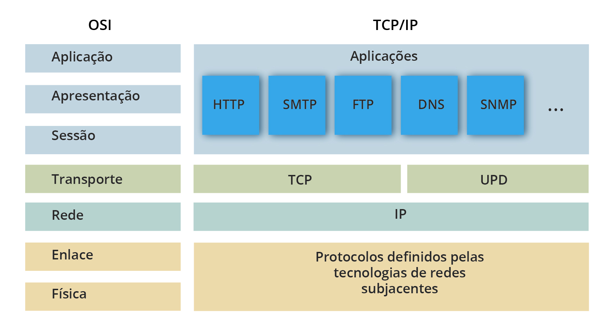
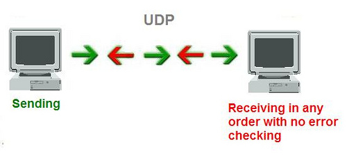

|
O modelo de interconexão de sistemas abertos (OSI) é um modelo
conceitual criado pela Organização Internacional de Normalização
que permite que diversos sistemas de comunicação se comuniquem
usando protocolos padronizados.
O OSI é o primeiro modelo padrão de comunicação entre sistemas
de computadores e redes, ele faz uso de sete camadas para garantir
essa conversa. A maioria das empresas da área de computadores e
telecomunicações o adotou no início dos anos 80. A partir daí, a
Organização Internacional de Normalização (ISO) o transformou
na principal referência em 1984.
|
ㅤㅤㅤㅤㅤㅤㅤㅤㅤ︶ ︶ ︶ ୨୧ ︶ ︶ ︶
Sua importância é enorme, pois ajuda usuários e profissionais a determinar o hardware e software necessários
para construir suas
redes, por exemplo. Além disso, facilita na hora de encontrar problemas em potencial, já que isso pode ser
visualizado de forma
individual em cada camada. esse modelo trabalha a partir de sete camadas responsáveis por partes distintas
da comunicação entre
sistemas de computadores e redes. Na prática, o que o modelo faz é agrupar os protocolos em camadas, mais
especificamente,
em sete delas:
Física (Physical).
Dados (Data Link).
Rede (Network).
Transporte (Transport).
Sessão (Session).
Apresentação (Presentation).
Aplicação (Application).
|  |
O TCP/IP é fundamental para a rede de internet. Esses dois protocolos
garantem que pacotes de informações cheguem a seu destino de forma correta
e segura. Dessa forma, conseguimos tratar e definir os dados entre os
dispositivos antes de alcançarem seus destinos. É correto afirmar que TCP/IP
é um conjunto de protocolos e um modelo de comunicação de rede que serve para,
principalmente, viabilizar a troca de informações entre ORIGEM e DESTINO.
Uma boa analogia é compará-lo a alguém que recebe as peças e, em seguida,
monta o quebra-cabeça por completo. Já o IP é o que define o endereço e o
caminho do pacote de dados, ele garante que as informações cheguem a seu
destino correto. Ele é basicamente o “carteiro”, que recebe o item e o checa
para ter certeza de que estará no local de seu objetivo.
|
ㅤㅤㅤㅤㅤㅤㅤㅤㅤ︶ ︶ ︶ ୨୧ ︶ ︶ ︶
Há quatro camadas para constituir o modelo:
Camada Aplicação: como o nome diz, usamos esta camada para definir o uso ou finalidade da transmissão dos
protocolos relacionados
ao programa. Existem diversos tipos para distintas aplicações, como por exemplo, para troca de e-mails
(SMTP), Internet (HTTP) e arquivos (FTP);
Camada Transporte: é responsável pela maneira que os dados serão transmitidos pela rede, conforme o uso,
prioridade ou criticidade do conteúdo
trafegado. Esta camada define a melhor maneira de os dados serem transmitidos. Estão inclusos aqui os
protocolos TCP e UDP;
Camada de Internet: ela é responsável pelo roteamento de origem e destino dos pacotes. Por meio dela, os
dispositivos de diversas redes privadas
e públicas encontram-se para troca de pacotes e informações solicitadas por diversas aplicações;
Camada de Enlace: cuida do conjunto de protocolos que fazem o enquadramento dos dados
anteriormente definidos e a transmissão em camada física de todo o conjunto. Usa métodos e
padrões que possam concluir a transmissão de maneira segura e confiável, de fim a fim.
Tecnologias como Wi-Fi e Ethernet trabalham ativamente nesta camada.
|  |
O Protocolo UDP é um protocolo de comunicação utilizado em toda a internet para
transmissões com validade especialmente limitada, tais como reproduções de vídeo
ou pesquisas no DNS. Ele acelera as comunicações ao não estabelecer formalmente
uma conexão antes que os dados sejam transferidos. Isso permite que os dados
sejam transferidos muito rapidamente, mas também pode fazer com que pacotes se
percam em trânsito além de criar oportunidades de exploração na forma de ataques
DDoS. Como todos os protocolos de rede, o UDP é um método padronizado de
transferência de dados entre dois computadores de uma rede.
|
ㅤㅤㅤㅤㅤㅤㅤㅤㅤ︶ ︶ ︶ ୨୧ ︶ ︶ ︶
O UDP é usado geralmente em comunicações com validade limitada, em que ocasionalmente é melhor descartar pacotes
do que esperar. O tráfego de voz e
vídeo é enviado usando esse protocolo porque ambos têm validade limitada e foram desenvolvidos para lidar com
algum nível de perda. Por exemplo, o VOIP
(voz sobre IP), que é usado por muitos serviços telefônicos baseados na internet, opera usando o UDP. Isso
porque uma conversa telefônica estável é
preferível a uma conversa clara, mas com muitos atrasos.
Isso também faz do UDP o protocolo ideal para games on-line. Da mesma forma, como os servidores de DNS precisam
ser rápidos e eficientes, eles também
operam por meio do UDP.